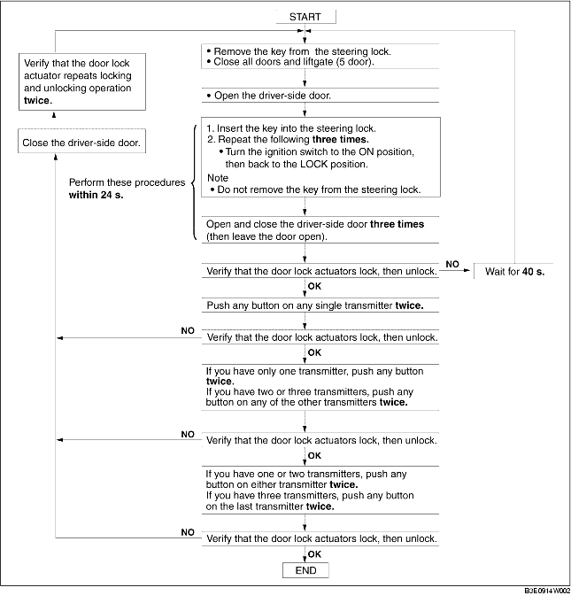

TRANSMITTER ID CODE REGISTRATION
B3E091467543W03
-
Note
-
• When registering the ID code into a keyless control module, verify that other transmitters are not being operated in the vicinity.
-
• After ID code registering, remove the key from the steering lock and verify that all doors lock/unlock normally using the transmitter.
